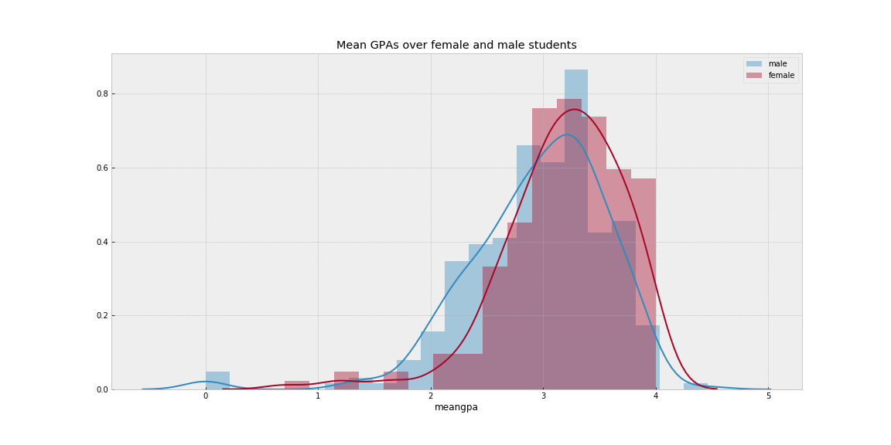
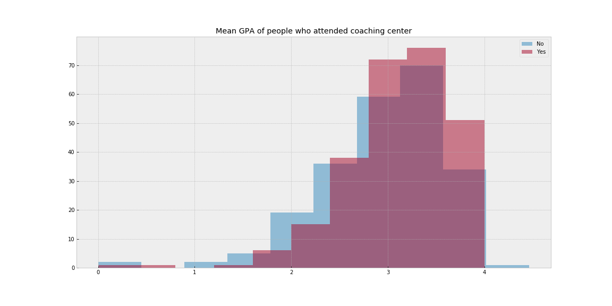

FINDING 1: there is a statistically significant difference between the mean GPAs of male and female students

FINDING 2: those who attended a coaching center had higher GPAs than those who did not

FINDING 3: Business majors' opinions about the university are worse than Arts or Law majors
|
count |
mean |
std |
| fac |
|
|
|
| Arts |
89.0 |
4.334793 |
0.515320 |
| Business |
339.0 |
4.007157 |
0.693473 |
| Law |
66.0 |
4.304695 |
0.707407 |
FINDING 4: the more a Bachelor student attended the university, the worse their opinions
|
opinion |
bsc_yr |
| opinion |
1.000000 |
-0.221231 |
| bsc_yr |
-0.221231 |
1.000000 |
|
count |
mean |
std |
| bsc_yr |
|
|
|
| 1st Year |
119.0 |
4.151261 |
0.819659 |
| 2nd Year |
125.0 |
4.040000 |
0.846244 |
| 3rd Year |
53.0 |
3.830189 |
0.871247 |
| 4th Year |
108.0 |
3.675926 |
1.048619 |
FINDING 5: GPAs tend to get worse over time
BONUS SLIDE
Hypotheses that looked reasonable but were not significant statistically (at $ \alpha = 5\% $):
-
Social media use correlates negatively w/ GPA
-
Students who live in a dorm have different GPA averages than those who live with their family or rent